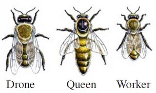
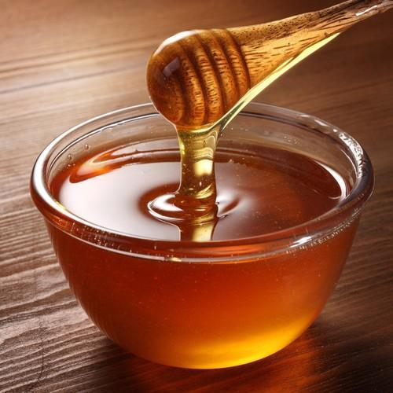
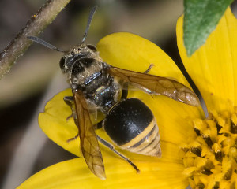
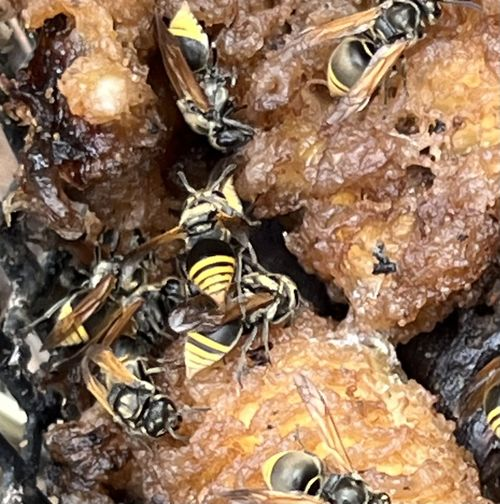

Would you be suprised to know that honey bees are not the only insects that produce honey?
In fact,
Honey bees are not the only eusocial insects to produce honey. All non-parasitic bumblebees and stingless bees produce honey.
Some wasp species, such as Brachygastra lecheguana and Brachygastra mellifica, found in South and Central America,
are known to feed on nectar and produce honey.

Fig. 1 Types of Honey Bee

Fig. 3 Standard Honey Bee Honey
The Mexican Honey Wasp, Brachygastra mellifica, is a species of honey prodcing wasp.
This species is found in North, Central, and South America. The honey they produce is extremely similar
to the honey produced by honey bees. The main difference between the two is the source of food.
Mexican Honey Wasps are primarily carnivorous, usually feeding on weevil and moth larvae as well as
the invasive Asian ctirus psyllid. These wasps will take the fluids from their pray, and follow
a similar process to honey bees in order to produce honey.

Fig. 2 Mexican Honey Wasp

Fig. 4 Honey from Brachygastra mellifica